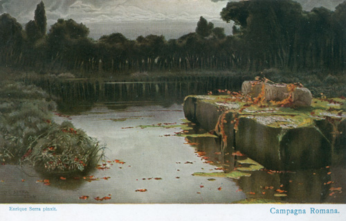
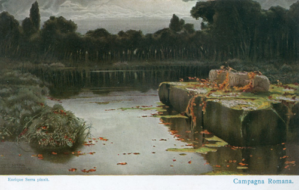

Wirinima
 

Akamah
Westliches Gebiet des Kontinents, auf dem die Amaka leben.
Die drei heiligen Zungen
Die drei heiligen Landzungen "Ak", "Am" und "Ah" sind der Legende nach das Ursprungsgebiet der Amaka.
Von dort breiteten sie sich über den Kontinent aus und gaben schließlich ihrem ganzen Land den Namen "Akamah".
Ak
Vor vielen Abläufen (Jahren) trennte sich Ak vom Festland und wurde zur Insel. Sie wird auch die Verlorene Insel genannt,
da die Amaka mit Ak einen wichtigen Teil ihrer Herkunft und damit Kultur verloren.